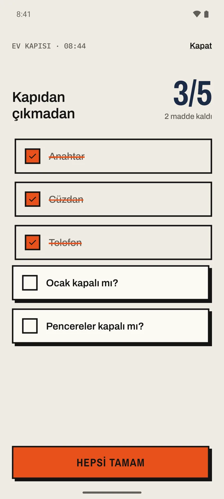

Kapıdan çıkınca hatırlatır.
Evini işaretle, kısa bir liste yaz: anahtar, cüzdan, ocak. Evden 100 metre uzaklaşınca telefonun hatırlatır, sen de saniyeler içinde işaretlersin. Uygulama kapalıyken de çalışır. Hesap gerekmez.
iPhone ve Android · Ücretsiz kullanılır · Türkçe ve İngilizce

Kapıdan çık. Liste sana gelsin.
Evdesin
Yapacak bir şey yok. Sen evdeyken Doornote sessiz kalır.
100 metre
Telefonun çıktığını fark eder ve hatırlatma gelir. Uygulama kapalı olsa bile.
İşaretle
Hatırlatmaya dokun, maddeleri tek tek işaretle. Büyük kutular, tek el.
Tamam
Saatiyle damgalanır; sonradan kontrol ettiğini bilirsin.


Bir kez kur. Sonra unut.
Kurulum bir dakika kadar sürer. Sonrasında her gün yapman gereken bir şey yok.
Kapını işaretle
Evdeyken “Şu an evdeyim”e bas. Orası kapın olur. 50, 100 ya da 200 metre seç.
Listeni yaz
Çıkarken kontrol ettiklerin. Düzenlemen için beş madde hazır; ücretsiz sürümde yedi maddeye kadar.
İki izin ver
“Her zaman” konum ve bildirim. Uygulama sormadan önce nedenini anlatır.
Konumun telefonunda kalır.
Hesap yok
Üyelik yok, reklam yok, analiz aracı yok, uygulamalar arası takip yok.
Sunucu yok
Mesafeyi telefonunun kendi konum sistemi izler. Doornote’un sunucusu yok; konumunu gönderecek bir yer de yok.
Açık açık
Kapını yerleştirdiğin harita Android’de Google Haritalar, iPhone’da Apple Haritalar; satın alma RevenueCat üzerinden yapılır. Neyi gördüklerini gizlilik politikası tek tek yazar.
Ücretsiz sürüm işini görür.
Premium daha fazla kapı ekler. Bir kez ödersin.
- 1 kapı
- En fazla 7 maddelik liste
- Kapıdan çıkınca hatırlatma
- Türkçe ve İngilizce
- Ev, ofis, yazlık: istediğin kadar kapı
- Her kapıya ayrı liste, sınırsız madde
- Bir telefonda al, yenisinde geri yükle
Sorular
Uygulamanın açık olması gerekir mi?
Hayır. Kapat, telefonu kilitle; hatırlatma yine gelir. “Her zaman” konum izni bunun için istenir.
Pilimi bitirir mi?
Fark edilir şekilde etkilemez. Konumu telefonun kendisi izler, Doornote yalnızca çıkışta birkaç saniye uyanır.
Hangi mesafeyi seçmeliyim?
100 m çoğu ev için en isabetlisi. 50 m daha erken uyarır ama telefonun konumu sapınca evin içindeyken de tetiklenebilir.
Android telefonum hiç hatırlatmıyor.
Bazı markalar pil için uygulamaları uyutur. Doornote bir kez uyutulmamayı ister; Xiaomi, Samsung gibi telefonlarda gereken ek ayarı gösterir. Ayarlar › Tanı raporu neyin eksik olduğunu söyler.
Premium abonelik mi?
Hayır, tek seferlik bir satın alma. Yeni telefonda Ayarlar’daki “Satın alımları geri yükle” yeterli.
Çıkmadan deneyebilir miyim?
Evet. Ayarlar › “Evden çıkmış gibi yap” bildirimi tam geleceği gibi gösterir.